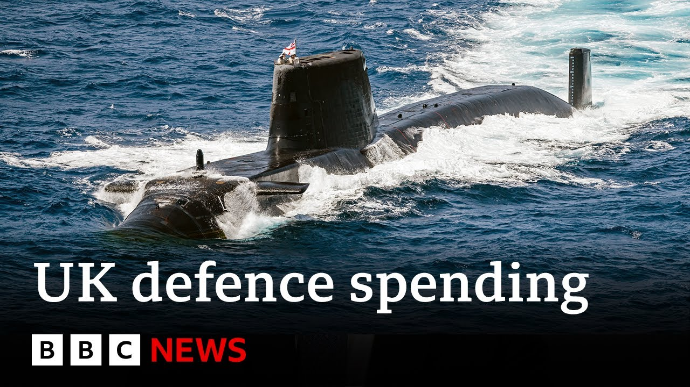

【英国首相基尔·斯塔默在宣布国防开支审查后表示“不能忽视”俄罗斯威胁 | BBC新闻】
Summary: Sakir Stalmer says all UK citizens must contribute to national defense as the government launches a strategic defense review, proposing £15 billion for nuclear modernization, new munitions factories, and submarines, but without committing to raise defense spending to 3% of GDP.
摘要： 萨基尔·斯塔默表示，随着政府启动战略防御审查，所有英国公民都必须为国防做出贡献，该审查提议投入150亿英镑用于核武器现代化、新建弹药工厂和潜艇，但未承诺将国防开支提高至GDP的3%。

⏱️ Estimated Reading Time: 14 min
Sakir Stalmer saying that all citizens of the UK will have to play a part in the defense of the nation as he launched the government's strategic defense review.
萨基尔·斯塔默表示，随着政府启动战略防御审查，所有英国公民都必须为国防做出贡献。
The proposals include plans to spend 15 billion pounds on modernizing Britain's nuclear weapons as well as building new munitions factories and submarines, but there's no firm commitment to increase defense spending to 3% of national income during the next parliament.
提案包括投入150亿英镑用于英国核武器现代化以及新建弹药工厂和潜艇，但未明确承诺在下届议会期间将国防开支提高至国民收入的3%。
Here's our political correspondent, Harry Farley.
以下是我们的政治记者哈里·法利报道。
up to 12 new attack submarines, boosting stockpiles of ammunition, including these Storm Shadow missiles, and a new cyber command.
包括多达12艘新型攻击潜艇、增加弹药库存（含“风暴阴影”导弹）以及新建网络司令部。
Commitments as part of today's review of the threats we face.
这些承诺是今日威胁审查的一部分。
Russia at the top of the list.
俄罗斯位居威胁清单首位。
I'm delighted to introduce you to our prime minister, Kirst.
我很荣幸向大家介绍我们的首相基尔。
The prime minister was at a weapons manufacturer in Glasgow this morning, saying the country must move to warfighting readiness.
首相今早在格拉斯哥一家武器制造商表示，国家必须进入战备状态。
Things have changed in the world of today.
当今世界局势已发生变化。
The front line, if you like, is here.
可以说，前线就在这里。
The threat we now face is more serious, more immediate, and more unpredictable than at any time since the Cold War.
我们当前面临的威胁比冷战以来任何时候都更严峻、更紧迫且更不可预测。
Most think to meet those threats, spending on defense needs to reach 3% of our economic output.
多数人认为，为应对这些威胁，国防开支需达到经济产出的3%。
The prime minister was asked when that target would be hit.
当被问及何时实现这一目标时，首相表示：
I'm not going to put arbitrary dates um on uh that percentage.
我不会为这一比例设定武断的时间表。
Um we will do that um as we did with 2.5 in a worked through way to deliver the capability that we need under this review.
我们将像实现2.5%目标那样，通过周密规划在本审查框架下达成所需能力。
For now, 3% remains an ambition, not a commitment.
目前3%仍是愿景而非承诺。
We're going to hear at the NATO summit coming up quite shortly that NATO is going to call for an increase to 3.5% with possibly up to 5% in the future.
我们即将在北约峰会上听到北约要求将比例提高至3.5%，未来可能达5%。
So these are real challenges for our prime minister and chancellor of the excheer to think about government spending priorities.
这对首相和财政大臣如何确定政府支出优先级构成实际挑战。
And if they're serious about making this country safe, they've got to find a way of making more money available to the Ministry of Defense to deliver on the ambition set out in this strategic defense review.
若他们真想让国家安全，就必须为国防部争取更多资金以实现战略防御审查设定的目标。
We've all agreed even two 2 and a half% doesn't cut it.
我们都认同即便2.5%也不够。
What that does is it basically supports all the current programs in the MOD.
这一比例仅能维持国防部现有项目运转。
But if we want to go further, as we all think we do, we need to get towards 3%.
但若想更进一步（正如共识），就需接近3%。
And so we need real clarity from the government on how much they are actually going to commit to spending on 3%.
因此我们需要政府明确承诺实际投入多少以实现3%。
The previous governments have devastatingly cut troop numbers.
往届政府大幅裁减了军队人数。
The Conservatives cut the troop numbers and we do recognize that we need um increasing troop numbers and even during this Labor government they've also um numbers have been going down as well and recruitment is just not what it needs to be.
保守党裁减了军队规模，我们确实意识到需要增加兵力，但即便本届工党政府任内人数仍在下降，征兵情况也未达预期。
The prime minister's argument is that spending more on defense can create new jobs and industries across the country.
首相认为增加国防开支能在全国创造新就业和产业。
Advisers in governments that I've been speaking to say they are conscious that fewer people now have a connection to the military and they need to not only warn of the dangers but talk up the opportunities to justify prioritizing this over other areas of government spending like welfare.
我接触的政府顾问指出，他们意识到如今民众与军队联系减少，因此不仅需警示危险，更要强调机遇以证明其优先于福利等其他政府支出领域的合理性。
New threats billions of pounds more to meet them but for many the question remains is it enough?
新威胁需追加数十亿英镑应对，但对许多人而言问题仍是：这足够吗？
Harry Farley BBC News in Westminster.
BBC新闻哈里·法利于威斯敏斯特报道。
Well, a good place to actually speak to the former chief of the general staff, Lord Danard, who joins us from Westminster.
现在很适合连线正在威斯敏斯特的前陆军参谋长丹纳德勋爵。
Welcome here to the program.
欢迎来到节目。
A general question first of all, is this broadly the right move, the right commitments, the right rhetoric?
首先请总体评价：这些举措、承诺和表态基本正确吗？
Well, the strategic defense review that's just been published today gives a very comprehensive uh and useful analysis of the threats to our security and it concludes with 62 recommendations which if fully funded would go a long way to meeting those threats and those challenges.
今日发布的战略防御审查对我们的安全威胁进行了全面有益分析，并提出62项建议——若获全额资助将极大助力应对这些威胁与挑战。
But um that's the that's the if bit.
但关键在于"若"字。
That's the unknown bit.
这是未知数。
And as you've already said in your introduction, the government has accepted that it needs to spend more money on defense.
如你开场所述，政府已承认需增加国防开支。
It's moving from 2.3 to 2.5% by 2027.
计划到2027年从2.3%提升至2.5%。
And that's good because that indicates the right direction of travel.
这很好，因表明正确方向。
But frankly, the quantum is not great enough and the speed is not great enough.
但坦率说，增量不足且速度不够。
And frankly, time isn't on our side.
更坦率讲，时间不等人。
I mean, if there was to be a ceasefire in Ukraine in the next one, two or three months or so, then Russia would be spared from the destruction of its soldiers and its equipment.
若乌克兰在未来两三个月内停火，俄罗斯将避免其士兵和装备继续损耗。
And within about two years, given that its economy is on a war footing, they'll be capable and able to strike somewhere else in NATO to test Article 5, the strength of collective security.
鉴于其经济处于战时状态，约两年内俄就有能力攻击北约其他地区以测试第五条集体防御条款。
So, the Ukrainians are buying us time.
因此乌克兰正为我们争取时间。
We've got to use that time wisely, and frankly, our government has got to find a way of putting more money into our defense budget to increase our capability quickly.
我们必须善用这段时间，政府也须设法增加国防预算以快速提升能力。
You've been very open through the course of the day.
您今日一直直言不讳。
In other interviews, you make the point that we need to go further faster.
在其他访谈中您强调需更快走得更远。
You also drew a parallel with events in 1938.
您还将当前与1938年事件类比。
Well, yes.
确实。
I mean, if we say, which is what the prime minister seem to be suggesting, that we're not going to go to 3% until sometime in the next parliament, perhaps not until 2034.
若如首相所言下届议会期间（可能迟至2034年）才实现3%，
It's tantamount to saying in 1937 to Adolf Hitler, hold on, don't attack us until 1946 because we're not going to be ready.
无异于1937年对希特勒说"请等到1946年再进攻，我们还没准备好"。
If um the prime minister is serious about getting the country on a war footing and increasing our defense capability to meet the threats outlined in this security review, then more money has to be made available.
若首相真想让国家进入战备状态并提升防御能力以应对安全审查所列威胁，就必须提供更多资金。
The big discussion now is where that's coming from.
现在核心争议是资金来源。
Is it going to come from growth in our economy?
来自经济增长吗？
That seems a bit sluggish.
经济增速似乎疲软。
we can't borrow anymore because we've borrowed up to the hilt.
我们已债台高筑无法再借。
So it may be that the unpalatable truth is that we've got to consider putting a penny or two on the basic rate of income tax or increasing the percentage of VAT.
因此或许不得不考虑提高基本所得税率或增值税率——这虽令人不悦但可能是维护集体安全与珍贵生活方式必须之举。
The government won't like it.
政府不会乐意。
The population of this country won't like it.
国民也不会喜欢。
But it may be the thing that we have to do to maintain our collective security and our cherished way of life.
但这或是维系集体安全与珍视生活方式的必要之策。
That is clearly an open question where the money actually comes from and perhaps the spending review in 10 days time give us pointers.
资金究竟从何而来仍是悬而未决的问题，或许10天后的支出审查能给出线索。
But in terms of what we've heard outlined, so submarine building, weapons production, how quickly does that come on stream?
就已公布内容（如潜艇建造、武器生产）而言，这些多快能落实？
Well, it'll come on stream as quickly as money has been committed to the Ministry of Defense budget because although the government quite rightly is trying to set out a defense industrial strategy, uh, defense contractors will not up their production capability, will not take on more workers until the Ministry of Defense signs hard and fast contracts and industry knows where the money is going to come from and going to flow to them.
进度取决于国防部预算拨款速度——尽管政府正合理制定国防工业战略，但承包商唯有在国防部签订硬性合同、明确资金来源后才会提升产能和雇佣。
So the ball sits in the government's court to put more fuel into the tank to fire up this engine and then we'll get the dividend of growth that the prime minister talks about.
因此政府需向油箱加注更多燃料以启动引擎，方能获得首相所说的增长红利。
He talks about a defense dividend.
他提到"国防红利"。
Well, that's an interesting concept because for the last 25 30 years we've had peace dividends as the defense budget has been raided.
这是个有趣概念——过去25-30年因国防预算被挪用，我们享受的是"和平红利"。
So we've really got to get this thing on a proper footing.
因此必须让国防回归正轨。
um decide as quickly as possible where the new money is coming from and then we can start to make progress in terms of material production.
尽快确定新资金
Two quick final thoughts.
制作方面。两个简短的最后想法。
The first, in terms of the rhetoric used by the prime minister today, who talked about being warfighting readiness.
首先，关于今天首相使用的措辞，他提到了战斗准备。
Do you think there is a danger there that it simply alarms people as to the threat that currently is around us?
你是否认为这种措辞会让人们对当前存在的威胁感到恐慌？
Well, peace through strength is a good maxim.
“以实力求和平”是一个很好的格言。
What I don't want to see is our young men and women get caught up in a war such as previous generations did.
我不希望看到我们的年轻人像前几代人那样卷入战争。
And the best way to avoid that is increasing the skills of our armed forces, increasing our armed forces’ capability,
避免这种情况的最佳方式是提高我们军队的技能和能力，
so that we are better able to deter further aggression from an aggressor like Putin's Russia.
以便我们更有效地威慑像普京的俄罗斯这样的侵略者。
That is the best way to keep us safe.
这是保护我们安全的最佳方式。
And you think that's realistic, isn't it?
你觉得这是现实的，对吧？
That's realistic in terms of the nature of the threat that we face.
就我们所面临的威胁性质而言，这是现实的。
A weak person will be attacked. A bully will think twice when the opponent looks strong.
软弱的人容易受到攻击，而欺凌者在对手强大时会三思而行。
It's been said about international diplomacy in the past: speak softly and carry a big stick.
过去的国际外交中常说：“轻声细语，手持大棒。”
Well, we're talking loudly and got a pretty small stick.
而现在我们是在大声喊话，却只拿着一根很小的棍子。
We've got to do better than that.
我们必须做得更好。
A final thought, because in the list of things that the prime minister outlined, there were only about four or five crucial things, and actually, housing was one of them.
最后一点，因为在首相列出的事项中，只有四五项是关键的，而住房实际上就是其中之一。
A final thought on that, because that is really important given what we've seen over the last maybe decade—cuts, and in terms of morale for service personnel, isn't it?
最后强调一下这一点，因为考虑到过去十年来的削减政策和对军人士气的影响，住房问题确实非常重要。
Yes. Improving service housing for both single and accompanied, married, partnered, accompanied families is really important as a weapon of retention.
是的。改善无论是单身军人还是已婚、有伴侣、家庭陪伴军人的住房，是保留部队人员的重要手段。
And if we're trying to increase the size of our armed forces, numbers of personnel, retaining trained personnel is a really good way of upping the numbers.
如果我们希望扩大军队规模，保留训练有素的人员是提高兵力的好方法。
Yes, we've got to recruit more, but investing in the quality of life of our existing service people is a very good way of retaining them,
是的，我们需要招募更多新兵，但投资于现役人员的生活质量是留住他们的好方法，
retaining their loyalty, and increasing their morale.
这可以保持他们的忠诚度，提升他们的士气。